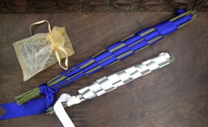

Facebook
Pinterest
Instagram
ES
EN
DE
☰ Menu
Home
The House
Accessories
Decorate
Instruccions
Illustration
Custom water bottles
Notebook crafts and activities 01
App NOT ONLINE RIGHT NOW
Blog
Holidays
Christmas
Easter
Halloween
Carnival & costumes
Valentine’s Day
Birthday
Mother’s/Father’s Day
Back to school
Seasons
Spring
Summer
Autumn
Winter
What to do
Toys
Games
Printables
Food & recipes
Decoration
Painting
Experiments
Outdoors
Learning
Animals
Gifts & jewellery
Building & tricks
Other crafts
Material
Paper
Cardboard
Paper rolls
Recycling
Stones
Leaves & nature
Fabric & sewing
Home
›
Blog
Blog
Holidays
Christmas
Easter
Halloween
Carnival & costumes
Valentine’s Day
Birthday
Mother’s/Father’s Day
Back to school
Seasons
Spring
Summer
Autumn
Winter
What to do
Toys
Games
Printables
Food & recipes
Decoration
Painting
Experiments
Outdoors
Learning
Animals
Gifts & jewellery
Building & tricks
Other crafts
Material
Paper
Cardboard
Paper rolls
Recycling
Stones
Leaves & nature
Fabric & sewing
Activity
Blowing clouds
Autumn
Pitch-chestnut
Autumn
Wind chimes
Material
Against the cold
Cardboard
Crocodile 02
Food
Worm
Nut
Nut music
Autumn
Hedgehog 02
Autumn
Hedgehog 01
Activity
Lavender

Activity
Eggheads
Activity
Magnet
Autumn
Collage
Activity
Latern 02
Food
Halloween
Autumn
Colors of autumn
Activity
Boat 03
Costume
Leafcrown
Leaves
Bookmark
Activity
Octopus
Activity
Marbles
Activity
Crocodile 01
House
Trainstation
House
Stairs
← Newer
Page 38 / 40
Older →